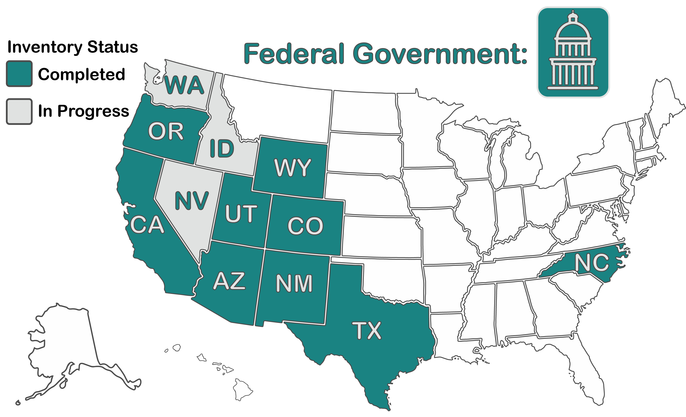

The network displays which entities are collecting water data, their mission, and the broad purposes for collecting those data. Click on an entity to highlight their network. Select a data purpose to see which entities collect water data for those purposes. A table of selections is located below the network.
The types of water data collected were categorized by the basic components of a water budget: quantity, quality, and use. Water flows through infrastructure, both natural and built, which is included as an additional category. Types of water data were further sub-divided within each component of the water budget as defined here. This categorization is arbitrary and other categorizations may be used when creating an inventory.
A network was created to illustrate the types of data provided by different data platforms. The lines connecting data types with data platforms do not necessarily reflect sharing of data between entities. Rather, it shows which entities are collecting similar types of data.
You can highlight entities and platforms in the network by selecting from the filter panel on the right. You may select by entity, data type, and openness metrics. A table of selected nodes will be created below the graph. See the Openness Scorecard tab for more details on openness metrics.
Data Platform Data: Quantity Data: Quality Data: Use Data: Infrastructure
The heat map shows which types of water data (rows) can be found at each data platform (columns). The bar charts below summarize the frequency of data collection (sums the rows of the heat map) and which data platforms provide the greatest variety of water-related data (sums the columns of the heat map).
The mission of the Internet of Water is to build a dynamic and voluntary network of communities and institutions to facilitate the opening, sharing, and integration of water data and information. This network will connect data producers, hubs, and users to enable the discovery, accessibility, and usability of water data and information.
A team of students has been inventorying federal and state governments to understand what water data are currently collected and how those data are discovered, accessed, and made usable. These inventories are quickly outdated and are meant to represent a fairly informed public data user's experience.
The methods, template, and data are all available for download at the bottom of the website. The inventory is a living document and may be periodically updated.

Data discoverability, accessibility, and usability were categorized and scored from low to high with the assumption that maximum openness (being able to find, download all data, and link to similar data) was the ideal. Note that usability is weighted more heavily than discoverability and accessibility. Scoring is as follows (click on plus icon or text to expand lists):
All scores were made relative to the maximum available score such that 0 is the lowest, and 100 the highest, score possible. Select a metric to see how different entities performed within and across inventories.
This inventory provides one method for assessing data FAIRness (Findable, Accessible, Interoperable, and Reusable). Another method for assessing FAIRNESS is provided by the FAIR metrics group and could also be adopted and used in a public water data inventory.